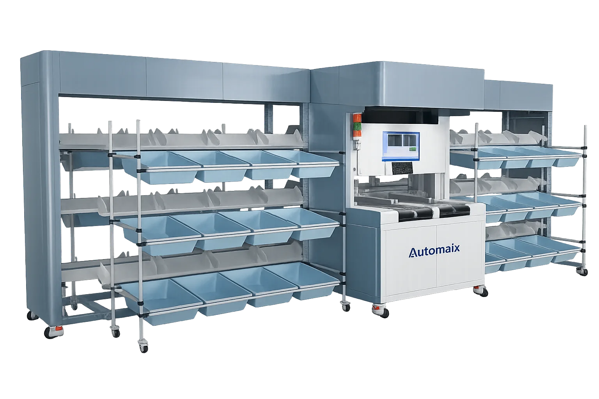

产品特点
つばめちゃん产品结构
由分拣主体、扫描器、分拣格口及供件口组成，按现场作业设计供件、读取、输送与分拣流程。
配置定制
可按需求研究行走轨道层数、扫描器规格、分拣格口数、供件口数和检修口位置等配置。
冷藏与冷冻环境规格
可咨询冷藏与冷冻环境规格，适用温度范围及设备配置需按项目确认。
模块化结构与安装
采用模块化结构。宣传册中“最快半天安装”是在特定条件下的参考，搬入路线、组装范围及包含调试的工期需单独确认。
电源与产品责任保险
可咨询AC100V电源及日本国内产品责任保险，电源容量、连接条件及保险适用范围需按导入配置确认。
规格与选型条件
| 尺寸（mm） | 6420 × 1870 × 2300 |
|---|---|
| 分拣格口数 | 48 |
| 处理能力 | 1,400件/小时 |
| 最大适用货物尺寸（mm） | 600 × 450 × 300 |
| 读取方式 | 顶部扫描／手持扫描 |
| 适用重量范围 | 30–5,000 g |
| 运行速度 | 最高 2.5 m/s |
规格数值为公司宣传册所载标准规格。实际处理能力受货物尺寸、重量、供件条件、格口数量及产线配置影响。设备尺寸不含维护与作业空间。
つばめちゃん系列｜三款型号标准规格
| 项目 | T-M-48-J | T-SL-50-J | T-SL-60-J |
|---|---|---|---|
| 尺寸（mm） | 6420 × 1870 × 2300 | 3859 × 1000 × 2369 | 4254 × 2115 × 2259 |
| 分拣格口数 | 48 | 40–50 | 48–60 |
| 处理能力 | 1,400件/小时 | 1,000件/小时 | 1,250件/小时 |
| 最大适用货物尺寸（mm） | 600 × 450 × 300 | 550 × 430 × 190 | 520 × 380 × 220 |
| 读取方式 | 顶部扫描／手持扫描 | 顶部扫描／手持扫描 | 顶部扫描／手持扫描 |
| 适用重量范围 | 30–5,000 g | 30–5,000 g | 50–5,000 g |
| 运行速度 | 最高 2.5 m/s | 最高 2 m/s | 最高 2 m/s |
规格数值为公司宣传册所载标准规格。实际处理能力受货物尺寸、重量、供件条件、格口数量及产线配置影响。设备尺寸不含维护与作业空间。
如何选择型号
根据处理量、安装空间与运营方式选型。おまかせくん与つばめちゃん均支持一次及二次分拣。
| 项目 | Omakase-kun | Tsubame-chan |
|---|---|---|
| 定位 | 大型、高速3D分拣设备 | 小型至中型节省空间型分拣设备 |
| 处理能力 | 10,800件/小时 (T-MX-72-J) | 1,000～1,400件/小时（因型号而异） |
| 安装面积参考 | 约100 m²（宣传册对比表参考值） | 约12 m²（宣传册对比表参考值） |
| 适用现场 | 大型物流中心、快递与电商大批量分拣 | 有限空间、中小型网点及二次分拣 |
安装面积并非各型号通用的保证值。布局需结合设备尺寸、作业动线、维护空间及周边设备确认。
此处处理能力统一采用具体型号的标准规格。公司宣传册对比页另有おまかせくん“10,000件/小时起”的表述。
导入前需确认的事项
请告知货物最小及最大尺寸与重量、所需处理量、格口数量、安装空间、电源、温度范围及既有设备接驳条件；维护范围和安装工序也将逐项确认。
咨询规格与报价